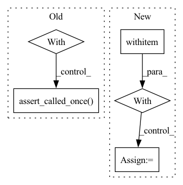

Pattern ID :22746
Before Change
ml_runner_with_run_id.container.max_num_gpus = 0
ml_runner_with_run_id.container.max_epochs += 10
assert ml_runner_with_run_id.checkpoint_handler.trained_weights_path
with patch.multiple(ml_runner_with_run_id, run_validation=mock.DEFAULT, run_inference=mock.DEFAULT) as mocks:
ml_runner_with_run_id.run()
assert mocks["run_validation"].called == run_extra_val_epoch
mocks["run_inference"].assert_called_once()
def test_model_weights_when_resume_training() -> None:
experiment_config = ExperimentConfig(model="HelloWorld")After Change
assert ml_runner_with_run_id.checkpoint_handler.trained_weights_path
mock_trainer = MagicMock()
with patch("health_ml.run_ml.create_lightning_trainer", return_value=(mock_trainer, MagicMock())):
with patch .object(ml_runner_with_run_id.container, "get_checkpoint_to_test") as mock_get_checkpoint_to_test:
with patch.object(ml_runner_with_run_id, "run_inference") as mock_run_inference:
with patch.object(ml_runner_with_run_id, "after_ddp_cleanup") as mock_after_ddp_cleanup:
mock_get_checkpoint_to_test.return_value = MagicMock(is_file=MagicMock(return_value=True))
ml_runner_with_run_id.run()
mock_after_ddp_cleanup.assert_called_once()
mock_get_checkpoint_to_test.assert_called_once()In pattern: SUPERPATTERN
Frequency: 3
Non-data size: 5
Instances Fragment ID: 72199885
Project Name: microsoft/hi-ml
Commit Name: 3d632766440a7856712cb0ba40ee6f5cac9fd5c1
Time: 2023-01-18
Author: 37396332+kenza-bouzid@users.noreply.github.com
File Name: hi-ml/testhiml/testhiml/test_run_ml.py
M Class Name: AnonimousClass
N Class Name: AnonimousClass
M Method Name: test_resume_training_from_run_id(2)
N Method Name: test_resume_training_from_run_id(2)
M Parent Class:
N Parent Class:
M File Name: hi-ml/testhiml/testhiml/test_run_ml.py
N File Name: hi-ml/testhiml/testhiml/test_run_ml.py
M Start Line: 352
M End Line: 357
N Start Line: 414
N End Line: 426
Before Change
runner.setup()
mock_create_trainer.return_value = MagicMock(), MagicMock()
runner.init_training()
with patch.object(runner, "validate_model_weights") as mock_validate_model_weights:
runner.run_validation()
mock_validate_model_weights.assert_called_once()
latest_message = caplog.records[-1].getMessage()
assert "Hook `on_run_extra_validation_epoch` is not implemented by lightning module." in latest_message
After Change
runner.checkpoint_handler.additional_training_done()
runner.container.outputs_folder.mkdir(parents=True, exist_ok=True)
with patch.object(container, "get_data_module"):
with patch ("health_ml.run_ml.create_lightning_trainer", return_value=(MagicMock(), MagicMock())):
with patch.object(runner.container, "get_checkpoint_to_test") as mock_get_checkpoint_to_test:
mock_get_checkpoint_to_test.return_value = MagicMock(is_file=MagicMock(return_value=True))
runner.init_inference()
runner.run_validation()
latest_message = caplog.records[-1].getMessage() Fragment ID: 72199884
Project Name: microsoft/hi-ml
Commit Name: 3d632766440a7856712cb0ba40ee6f5cac9fd5c1
Time: 2023-01-18
Author: 37396332+kenza-bouzid@users.noreply.github.com
File Name: hi-ml/testhiml/testhiml/test_run_ml.py
M Class Name: AnonimousClass
N Class Name: AnonimousClass
M Method Name: test_model_extra_val_epoch_missing_hook(1)
N Method Name: test_model_extra_val_epoch_missing_hook(1)
M Parent Class:
N Parent Class:
M File Name: hi-ml/testhiml/testhiml/test_run_ml.py
N File Name: hi-ml/testhiml/testhiml/test_run_ml.py
M Start Line: 232
M End Line: 244
N Start Line: 303
N End Line: 316
Before Change
// warning if no POS assigned
doc = nlp.make_doc("coping")
logger = logging.getLogger("spacy")
with mock.patch.object(logger, "warning") as mock_warning:
doc = lemmatizer(doc)
mock_warning.assert_called_once()
// works with POS
doc = nlp.make_doc("coping")
assert doc[0].lemma_ == ""After Change
// warning if no POS assigned
doc = nlp.make_doc("coping")
with pytest .warns(UserWarning):
doc = lemmatizer(doc)
// warns once by default
doc = lemmatizer(doc)
Fragment ID: 72199881
Project Name: explosion/spaCy
Commit Name: 9dfd3c9484a2cf332bed9f84473c2d419f621fb6
Time: 2021-06-04
Author: adrianeboyd@gmail.com
File Name: spacy/tests/pipeline/test_lemmatizer.py
M Class Name: AnonimousClass
N Class Name: AnonimousClass
M Method Name: test_lemmatizer_config(1)
N Method Name: test_lemmatizer_config(1)
M Parent Class:
N Parent Class:
M File Name: spacy/tests/pipeline/test_lemmatizer.py
N File Name: spacy/tests/pipeline/test_lemmatizer.py
M Start Line: 62
M End Line: 68
N Start Line: 59
N End Line: 63